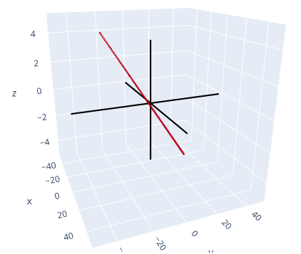

Chapter 1 - Linear Equations in Linear Algebra
1.5 - Solution Sets of Linear Systems
| Main: | Index |
| Previous: | 1.4 - The matrix equation Ax = b |
| Next: | 1.7 - Linear Independence |
Results
Homogeneous Linear Systems
A system of linear equations is homogeneous if it can be written as: $A\bs{x} = \bs{0}$. This system always has a solution which is simply $\bs{x} = \bs{0}$. This is called the trivial solution.Any nontrivial solution is when there is a nonzero vector $\bs{x}$ that satisfies the system. From the Existence and Uniqueness theorem in 1.2, we get the following:
THM 1.2 ⇒ Result
The homogeneous equation $A\bs{x} = \bs{0}$ has a nontrivial solution
if and only if the equation has at least one free variable.
NOTE: Unclear to me why this is true. We will create an example in $\R^3$ with a free variable and investigate the plots. $$ A = \begin{bmatrix*}[rrrr] 1 & 0 & -1 & 2 \\ 0 & 1 & -1 & 3 \\ 0 & 0 & 0 & 0 \end{bmatrix*} \sim \begin{bmatrix*}[rrrr] 2 & 3 & -5 & 13 \\ 1 & 1 & -2 & 5 \\ 3 & 1 & -4 & 9 \end{bmatrix*} $$ This corresponds to the linear system: $$ \begin{array}{rcccccr} 2x_1 & + & 3x_2 & - & 5x_3 & = & 13 \\ x_1 & + & x_2 & - & 2x_3 & = & 5 \\ 3x_1 & + & x_2 & - & 4x_3 & = & 9 \end{array} $$ Solving for one of the variables, say $x_2$. $$ \begin{array}{rcccccr} x_2 & = & 13/3 & - & (2/3)x_1 & + & (5/3)x_3 \\ x_2 & = & 5 & - & x_1 & + & 2x_3 \\ x_2 & = & 9 & - & 3x_1 & + & 4x_3 \end{array} $$ Here is a plot of the three planes:

As we can see, there is an infinite number of solutions as the three planes intersect on a line in the space.
Now, what exactly does it mean that $A\bs{x} = \bs{0}$? The matrix $A$ transforms points in $\R^3$, or maps from one point to another. For instance for some vector $\bs{v} = (1, 2, 3)$: $$ A\bs{v} = \begin{bmatrix*}[rrr] 2 & 3 & -5 \\ 1 & 1 & -2 \\ 3 & 1 & -4 \end{bmatrix*} \begin{bmatrix*}[r] 1 \\ 2 \\ 3 \end{bmatrix*} \;=\; \begin{bmatrix*}[c] 2(1) + 3(2) - 5(3) \\ 1(1) + 1(2) - 2(3) \\ 3(1) + 1(2) - 4(3) \end{bmatrix*} \;=\; \begin{bmatrix*}[c] 2 + 6 - 15 \\ 1 + 2 - 6 \\ 3 + 2 - 12 \end{bmatrix*} \;=\; \begin{bmatrix*}[c] -7 \\ -3 \\ -7 \end{bmatrix*} $$ Now it is more clear: we are looking for the set of points in $\R^3$ that are mapped to $\bs{0}$ when multiplied by the matrix $A$. And this is only non-trivial when we have free variables. In the cases where we have a unique solution, i.e. all the columns are linearly independent, the only point that gives $\bs{0}$ is the zero vector itself. Hard to work out why, geometrically. But it makes sense algebraically when looking at the equations.
The planes plotted above are simply the input sets that map to the point we arbitrarily selected: $(13, 5, 9)$. As an example, if we fix $x_3 = 1$ and, which gives $$ \begin{align*} x_1 &= 2 + x_3 = 2 + 1 = 3 \\ x_2 &= 3 + x_3 = 3 + 1 = 4 \end{align*} $$ which becomes the vector $(3, 4, 1)$. Calculating $A\bs{v}$: $$ A\bs{v} = \begin{bmatrix*}[rrr] 2 & 3 & -5 \\ 1 & 1 & -2 \\ 3 & 1 & -4 \end{bmatrix*} \begin{bmatrix*}[r] 3 \\ 4 \\ 1 \end{bmatrix*} \;=\; \begin{bmatrix*}[c] 2(3) + 3(4) - 5(1) \\ 1(3) + 1(4) - 2(1) \\ 3(3) + 1(4) - 4(1) \end{bmatrix*} \;=\; \begin{bmatrix*}[c] 6 + 12 - 5 \\ 3 + 4 - 2 \\ 9 + 4 - 4 \end{bmatrix*} \;=\; \begin{bmatrix*}[c] 13 \\ 5 \\ 9 \end{bmatrix*} $$
In essence, when we solve an augmented matrix, the solution set is a subset of $\R^n$ with the points that - when multiplied by $A$ - map to the point of interest. Graphical illustration of the solution set:

And finally - finding the solution set that maps to 0 is trivial when there are no free variables, because the end results becomes: $$ \begin{bmatrix*}[rrrr] 1 & 0 & 0 & 0 \\ 0 & 1 & 0 & 0 \\ 0 & 0 & 1 & 0 \end{bmatrix*} \;\;\Longrightarrow\;\; \left\{ \begin{array}{l} x_1 = 0 \\ x_2 = 0 \\ x_3 = 0 \end{array} \right. $$ which is the trivial solution. When there is a free variable, we get an infinite number of solutions that map to 0.
Any solution set can be expressed as Span$\{\bs{v}_1,\ldots,\bs{v}_p\}$ for suitable vectors. If the solution set is 0, we can write Span$\{\bs{0}\}$.
Solutions of Nonhomogeneous Systems
When solving a nonhomogeneous linear system that has an infinite number of solutions, the general solution can be written in parametric form as one vector plus an arbitrary linear combination of vectors that satisfy the corresponding homogeneous system.This is all summarized in the following theorem.
Theorem 1.6
Suppose the equation $A\bs{x} = \bs{b}$ is consistent for some given b
and let p be a solution. Then the solution set of $A\bs{x} = \bs{b}$
is the set of vectors of the form w = p + vh,
where vh is any solution to the homogeneous equation
$A\bs{x} = \bs{0}$.
The theorem says that if $A\bs{x} = \bs{b}$ has a solution, then the solution set is obtained by taking the solution set of $A\bs{x} = \bs{0}$ and translating it by using any particular solution p of the nonhomogeneous equation.
Algorithm: Writing a solution set in Parametric Vector Form
1. Row reduce the augmented matrix to RREF
2. Express each basic variable in terms of any free variables in the equation
3. Write a typical solution x as a vector whose entries depend on the free variable
4. Decompose x into a linear combination of vectors (with numeric entries) using the free variable as a parameter.
2. Express each basic variable in terms of any free variables in the equation
3. Write a typical solution x as a vector whose entries depend on the free variable
4. Decompose x into a linear combination of vectors (with numeric entries) using the free variable as a parameter.
Exercise 1
Determine if the system has nontrivial solutions. Use as few row operations as possible. $$ \begin{array}{rccccrr} 2x_1 & - & 5x_2 & + & 8x_3 & = & 0 \\ -2x_1 & - & 7x_2 & + & x_3 & = & 0 \\ 4x_1 & + & 2x_2 & + & 7x_3 & = & 0 \end{array} $$Answer
There are only nontrivial solutions if the system has free variables. Augmented matrix: $$ \begin{bmatrix*}[rrrr] 2 & -5 & 8 & 0 \\ -2 & -7 & 1 & 0 \\ 4 & 2 & 7 & 0 \end{bmatrix*} $$ II + I $$ \begin{bmatrix*}[rrrr] 2 & -5 & 8 & 0 \\ 0 & -12 & 9 & 0 \\ 4 & 2 & 7 & 0 \end{bmatrix*} $$ III - 2I $$ \begin{bmatrix*}[rrrr] 2 & -5 & 8 & 0 \\ 0 & -12 & 9 & 0 \\ 0 & 12 & -9 & 0 \end{bmatrix*} $$ Here we see that the system has free variables, and so it must have non-trivial solutions.
■
Exercise 8
Describe all solutions of Ax = 0 in parametric vector form when: $$ A = \begin{bmatrix*}[rrrr] 1 & -2 & -9 & 5 \\ 0 & 1 & 2 & -6 \end{bmatrix*} $$Answer
Using the algorithm. Step 1: Finding the RREF. Augmented form: $$ \begin{bmatrix*}[rrrrr] 1 & -2 & -9 & 5 & 0\\ 0 & 1 & 2 & -6 & 0 \end{bmatrix*} $$ Only need one row operation: I + 2II $$ \begin{bmatrix*}[rrrrr] 1 & 0 & -5 & -7 & 0 \\ 0 & 1 & 2 & -6 & 0 \end{bmatrix*} $$ There are two free variables. Step 2: Specifying the solution set: $$ \left\{ \begin{array}{l} x_1 = 5x_3 + 7x_4 \\ x_2 = -2x_3 + 6x_4 \\ x_3 \;\text{is free}\\ x_4 \;\text{is free} \end{array} \right. $$ Step 3: $$ \bs{x} = \begin{bmatrix*}[r] x_1 \\ x_2 \\ x_3 \\ x_4 \end{bmatrix*} = \begin{bmatrix*}[c] 5x_3 + 7x_4 \\ -2x_3 + 6x_4 \\ x_3 \\ x_4 \end{bmatrix*} $$ Step 4: Decomposing into vectors. $$ \bs{x} = x_3 \begin{bmatrix*}[r] 5 \\ -2 \\ 1 \\ 0 \end{bmatrix*} + x_4 \begin{bmatrix*}[c] 7 \\ 6 \\ 0 \\ 1 \end{bmatrix*} $$ Verifying: fixing $x_3 = x_4 = 1$, so the non-trivial solution vector becomes: $$ \begin{bmatrix*}[c] 12 \\ 4 \\ 1 \\ 1 \end{bmatrix*} $$ Multiplying with A. $$ \begin{bmatrix*}[rrrrr] 1 & -2 & -9 & 5 & 0\\ 0 & 1 & 2 & -6 & 0 \end{bmatrix*} \begin{bmatrix*}[c] 12 \\ 4 \\ 1 \\ 1 \end{bmatrix*} \;=\; \begin{bmatrix*}[c] 1(12) + (-2)(4) + (-9)(1) + 5(1)\\ 0(12) + 1(4) + 2(1) + (-6)(1) \end{bmatrix*} \;=\; \begin{bmatrix*}[c] 12 - 8 - 9 + 5\\ 0 + 4 + 2 - 6 \end{bmatrix*} \;=\; \begin{bmatrix*}[c] 0\\ 0 \end{bmatrix*} $$
■
Exercise 13
Suppose the solution set of a certain system of linear equations can be described as $$ \begin{align*} x_1 &= 5 + 4x_3 \\ x_2 &= -2 -7x_3 \end{align*} $$ where $x_3$ is free. Use vectors to describe this set as a line in ℝ3.Answer
$$ \bs{x} = \begin{bmatrix*}[r] x_1 \\ x_2 \\ x_3 \end{bmatrix*} = \begin{bmatrix*}[c] 5 + 4x_3 \\ -2 -7x_3 \\ x_3 \end{bmatrix*} $$ Parametric vector form: $$ \bs{x} = \begin{bmatrix*}[r] 5 \\ -2 \\ 0 \end{bmatrix*} + x_3 \begin{bmatrix*}[r] 4 \\ -7 \\ 1 \end{bmatrix*} $$ When $x_3 = 0$ the line passes through the x-y plane in the point $(5, -2)$. After that it follows the line described by the vector $(4, -7, 1)$.
Here is an illustration of the line:

■
Exercise 27
Suppose A is the 3×3 zero matrix (with all zero entries). Describe the solution set of the equation Ax = 0.Answer
Rephrased: what is the set of vectors y so that Ay = 0? In this case, the matrix maps any vector to the zero space. Take some vector y = (a, b, c) for some arbitrary a,b,c ∈ ℝ. $$ A\bs{y} = \begin{bmatrix*}[rrr] 0 & 0 & 0 \\ 0 & 0 & 0 \\ 0 & 0 & 0 \end{bmatrix*} \begin{bmatrix*}[r] a \\ b \\ c \end{bmatrix*} = \begin{bmatrix*}[r] 0 \\ 0 \\ 0 \end{bmatrix*} = \bs{0}. $$ In short, the null space is the entire space ℝ3.
■
Exercise 28
If $\bs{b}\not=\bs{0}$, can the solution set of Ax = b be a plane through the origin? Explain.Answer
Assuming that we are working in ℝ4 and working our way backwards. In order for the solution to be a plane through the origin, one solution would be on the form: $$ \bs{x} = \begin{bmatrix*}[r] 0 \\ 0 \\ 0 \\ 0 \end{bmatrix*} + x_3 \begin{bmatrix*}[r] a \\ b \\ 1 \\ 0 \end{bmatrix*} + x_4 \begin{bmatrix*}[r] c \\ d \\ 0 \\ 1 \end{bmatrix*} $$ Since $x_3 = x_4 = 0$ gives us a point in the origin. The corresponding solution set is expressed as: $$ \left\{ \begin{array}{l} x_1 = -ax_3 - bx_4 \\ x_2 = -cx_3 - dx_4 \\ x_3\text{ is free} \\ x_4\text{ is free} \end{array} \right. $$ The corresponding matrix: $$ \begin{bmatrix*}[rrrrr] 1 & 0 & a & b & 0 \\ 0 & 1 & c & d & 0 \\ 0 & 0 & 0 & 0 & 0 \\ 0 & 0 & 0 & 0 & 0 \end{bmatrix*} $$ But now we identify a problem: no matter how many row operations we perform, we still have only 0s in the rightmost column. We cannot go back to the case with b.
Trying another approach. What if we assume the following solution set: $$ \bs{x} = \begin{bmatrix*}[r] 2 \\ 3 \\ 1 \\ 1 \end{bmatrix*} + x_3 \begin{bmatrix*}[r] 2 \\ 0 \\ 1 \\ 0 \end{bmatrix*} + x_4 \begin{bmatrix*}[r] 0 \\ 3 \\ 0 \\ 1 \end{bmatrix*} $$ Now we have another problem: the first column (2,3,1,1) cannot have any values in the last two rows, because this does not work with the free variables. So this case is also impossible.
In conclusion: no, we cannot have a plane through the origin if b ≠ 0. This ties together with the notions of a particular and general solution of nonhomogeneous systems.
■